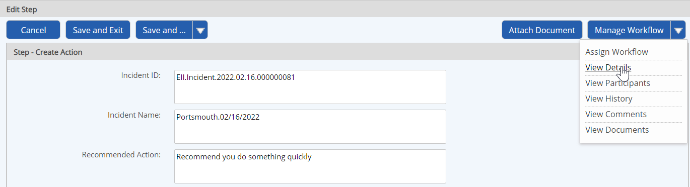

You can view the summary details of a workflow from any workflow step form.
To view workflow details from the step completion form:
Select View Details from the Manage Workflow button.

The general information shown at the top includes the workflow name, status, assignee, due date, associated objects, associated documents, creator and creation date.
The steps in the workflow so far are shown, including the user assigned to the step, the assignee, role, completion date and action status. If there are any child workflows, they will also be shown.